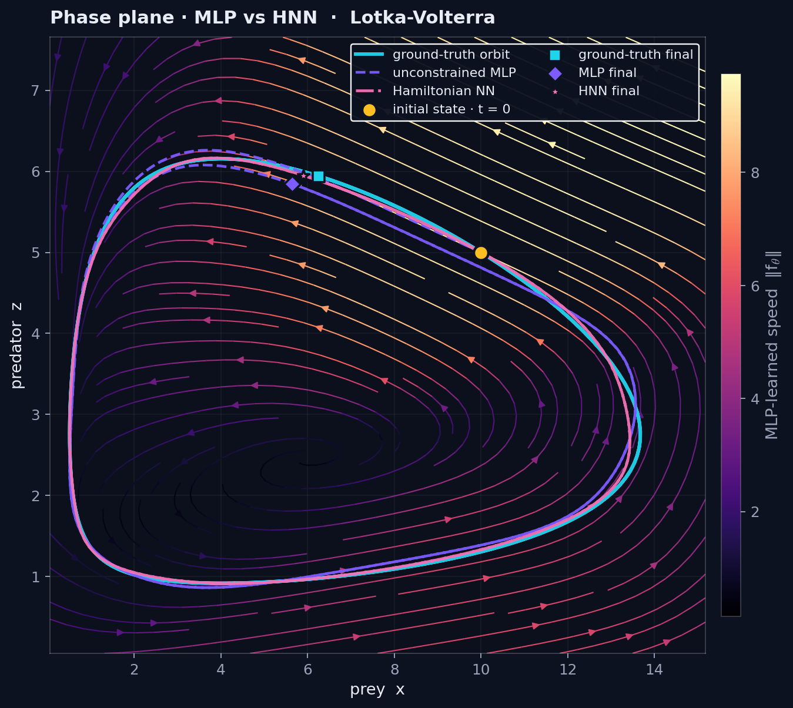
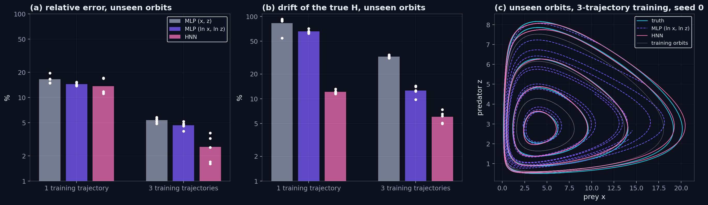

Neural networks that learn the vector field of an ODE from short noisy trajectories, and a controlled ablation of when a Hamiltonian prior helps them generalise to orbits they never saw.
torchdiffeq), with a curriculum on the integration window.

Pre-trained MLP and HNN checkpoints integrated live on Hugging Face Spaces: change the horizon, pick an unseen orbit and compare the predicted orbits and their conserved quantity.
First load can take 20–40 s while the Space starts.